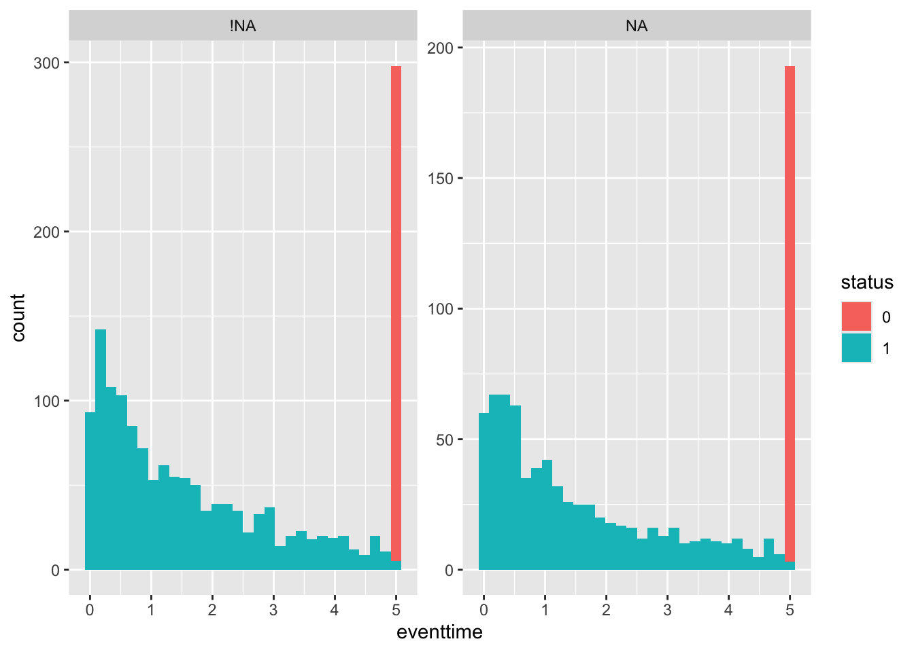
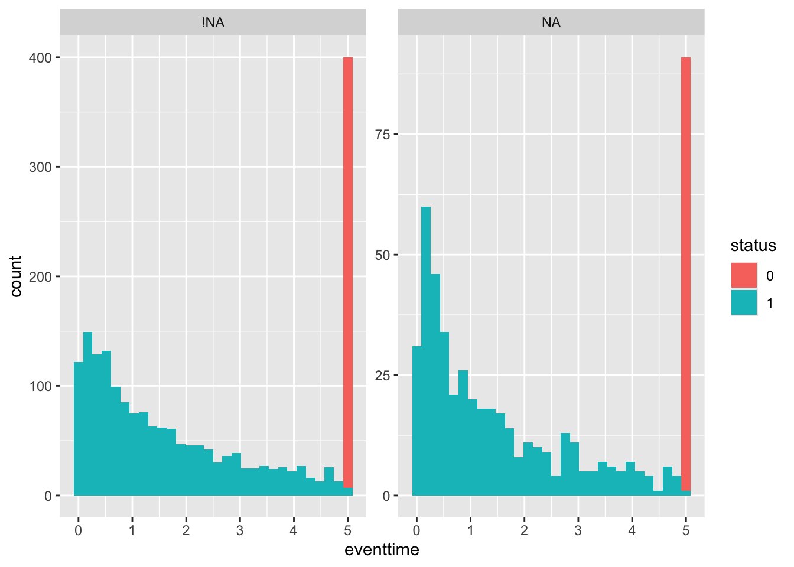

C Computer practical 4 - Analysis for Binary and Survival data
The dataset we’ll use to explore Binary outcome data is the respiratory dataset, from the package HSAUR. In this trial, patients across two centres were randomly assigned to receive treatment or placebo, and their respiratory status was recorded as either ‘poor’ or ‘good’. Measurements were recorded at months 0, 1, 2, 3, 4, but we will keep only month 0 (as a baseline) and month 4 (as a final outcome). We process the data below:
library(HSAUR)
data("respiratory")
# Keep only months 0 and 4
resp_04 = respiratory[respiratory$month %in% c(0,4),]
# Use month 4 data to form basis of overall dataset
resp_df = respiratory[respiratory$month %in% c(4),]
# add month 0 statusses in as baseline, and remove month column
resp_df$status0 = resp_04$status[resp_04$month==0]
resp_df = resp_df[ ,-6]For each patient, we have the following baseline covariates:
- sex
- age
- treatment centre (centre 1 or centre 2)
- symptom status (poor or good).
The outcome variable is whether the status of the patient’s symptoms are poor or good after four months of the trial. We will build up through some of the models we studied in Chapter ??.
C.0.1 Confidence Intervals
Our first step will be to fit a Newcombe confidence interval for the absolute risk difference, as we did in Section ??. Recall that the limits of a \(100(1-\alpha)\%\) CI for the ARD \(\pi_T - \pi_C\) are given by
\[ \left(p_T - p_C - \sqrt{\left(p_T-l_T\right)^2 + \left(u_C - p_C\right)^2},\; p_T - p_C + \sqrt{\left(u_T - p_T\right)^2 + \left(p_C - l_C\right)^2}\right), \] where \(p_X\) is the estimate of \(\pi_X\) (for group \(X\)), and \(\left(l_X,\,u_X\right)\) is the \(100\left(1-\alpha\right)\%\) CI for \(\pi_X\). The limits of the \(100\left(1-\alpha\right)\%\) Newcombe CI for \(\pi_X\) are given by the roots of the equation (in \(\pi_X\))
\[ \left(p_X - \pi_X\right)^2 = z^2_{\frac{\alpha}{2}}\frac{\pi_X\left(1-\pi_X\right)}{n}. \]
Exercise C.1 Using only the final / month 4 outcomes, find the Newcombe 95% CI for the ARD for the resp_df dataset we made above, treating a ‘good’ respiratory status as 1 and a ‘poor’ respiratory status as 0. Translate this into a confidence interval for the number needed to treat (NNT). Comment on the result.
Click for solution
Solution. The first thing we need to do is to find the limits of the individual CIs for groups C and T. To do this, we need the data estimates of \(p_C\) and \(p_T\).
rC = sum((resp_df$status == "good")&(resp_df$treatment == "placebo"))
nC = sum(resp_df$treatment == "placebo")
pC = rC / nC
rT = sum((resp_df$status == "good")&(resp_df$treatment == "treatment"))
nT = sum(resp_df$treatment == "treatment")
pT = rT / nTTo find the limits of the individual CIs, we need to rearrange the quadratic equation above into the form we’re used to
\[\left(1 + \frac{z^2}{n}\right)\pi^2 + \left(-2p-\frac{z^2}{n}\right)\pi + p^2 = 0.\] It is simple to define a function to solve quadratic equations in this form, for example
quad_fun = function(a,b,c){
disc = b^2 - 4*a*c
lower = (-b - sqrt(disc))/(2*a)
upper = (-b + sqrt(disc))/(2*a)
c(lower, upper)
}and we can now find the limits of each CI:
# Control group
lim_resp_C = quad_fun(
a = 1 + qnorm(0.975)^2/nC,
b = -2*pC - qnorm(0.975)^2/nC,
c = pC^2
)
lim_resp_C## [1] 0.3177270 0.5672199# Treatment group
lim_resp_T = quad_fun(
a = 1 + qnorm(0.975)^2/nT,
b = -2*pT - qnorm(0.975)^2/nT,
c = pT^2
)
lim_resp_T## [1] 0.4962747 0.7457662Notice that because \(p_C\) is quite close to 0.5, the Newcome interval for \(\pi_C\) is close to symmetric. The CI for \(\pi_T\) is more skewed.
Finally we can use these values to find the Newcombe CI for the ARD:
# Make objects match notation
lC = lim_resp_C[1]
uC = lim_resp_C[2]
lT = lim_resp_T[1]
uT = lim_resp_T[2]
l_newc = pT - pC - sqrt((pT - lT)^2 + (uC - pC)^2)
u_newc = pT - pC + sqrt((uT - pT)^2 + (pC - lC)^2)
c(l_newc, u_newc)## [1] 0.005756246 0.358655200Finally we can use this to find a 95% CI for the NNT by finding the reciprocals of the limits of the CI for ARD:
## [1] 2.788193 173.724346This is a huge range and would make it difficult to make a clinical decision.
With the quantities we’ve found in exercise C.1 we can also find an approximate 95% CI for the risk ratio (see Section ??).
Exercise C.2 Find a 95% CI for the risk ratio \(\frac{\pi_T}{\pi_C}\) and comment on your result.
Click for solution
Solution. Recall that the limits of the \(100\left(1-\alpha\right)\%\) CI for the log of the risk ratio are given by
\[ \log\left(\frac{p_T}{p_C}\right) \pm z_{\frac{\alpha}{2}}\sqrt{\left(r_T^{-1} - n_T^{-1}\right) + \left(r_C^{-1} - n_C^{-1}\right)}. \]
Therefore for our respiratory data we have
# Find the estimated log OR and the distance to the limits of the CI
log_or_resp = log(pT/pC)
ci_diff = qnorm(0.975)*sqrt(1/rT - 1/nT + 1/rC - 1/nC)
# Calculate CI
ci_log_rr = c(log_or_resp - ci_diff, log_or_resp + ci_diff)
ci_log_rr## [1] 0.003626936 0.719476906To transform this into a CI for the RR itself, we use
## [1] 1.003634 2.053359This seems like a relatively narrow CI, but the fact that it comes so close to containing one (the ‘null value’ for the risk ratio) fits with the very large upper limit on the NNT / small lower limit on the ARD. Although this treatment appears significant, it may be that it has a very minimal effect in practice.
C.0.2 Logistic regression
We next looked at logistic regression as way to account for the baseline covariates. To fit a logistic regression in R we use the function glm. This fits all kinds of generalised linear models, and so we specify that we want a logistic regression by choosing family = binomial(link='logit').
The code is included in all examples in Sections ?? and ??, so if you aren’t sure how to do something they woulg be a good place to look.
Exercise C.3 Fit a logistic regression model to the resp_df data set, being careful to check for any issues with the data.
Click for solution
Solution. Before we fit the logistic regression we should check for balance in the data. For example, below we see the mean and SD of age, and the mean of status0 for the other factor variales.
resp_df%>%
group_by(sex) %>%
summarise(
meanage=mean(age), sdage=sd(age), meanbaseline = mean(as.numeric(status0))
)## # A tibble: 2 × 4
## sex meanage sdage meanbaseline
## <fct> <dbl> <dbl> <dbl>
## 1 female 31.2 13.5 1.47
## 2 male 41.3 11.1 1.39resp_df%>%
group_by(centre) %>%
summarise(
meanage=mean(age), sdage=sd(age), meanbaseline = mean(as.numeric(status0))
)## # A tibble: 2 × 4
## centre meanage sdage meanbaseline
## <fct> <dbl> <dbl> <dbl>
## 1 1 30.3 11.6 1.32
## 2 2 36.3 15.0 1.58## # A tibble: 2 × 3
## status0 meanage sdage
## <fct> <dbl> <dbl>
## 1 poor 33.7 13.0
## 2 good 32.8 14.5Broadly speaking things look OK.
The first model we fit involves all covariates linearly:
model1 = glm(status ~ centre + treatment + sex + age + status0,
family = binomial(link='logit'), data=resp_df)
summary(model1)##
## Call:
## glm(formula = status ~ centre + treatment + sex + age + status0,
## family = binomial(link = "logit"), data = resp_df)
##
## Coefficients:
## Estimate Std. Error z value Pr(>|z|)
## (Intercept) -0.83921 0.67498 -1.243 0.213757
## centre2 1.27397 0.48546 2.624 0.008684 **
## treatmenttreatment 1.08498 0.47415 2.288 0.022122 *
## sexmale 0.33480 0.60171 0.556 0.577924
## age -0.02978 0.01805 -1.650 0.099035 .
## status0good 1.72562 0.47024 3.670 0.000243 ***
## ---
## Signif. codes: 0 '***' 0.001 '**' 0.01 '*' 0.05 '.' 0.1 ' ' 1
##
## (Dispersion parameter for binomial family taken to be 1)
##
## Null deviance: 153.44 on 110 degrees of freedom
## Residual deviance: 119.34 on 105 degrees of freedom
## AIC: 131.34
##
## Number of Fisher Scoring iterations: 4We can also try one with age squared, since the effect might not be linear (the age range is 11 to 68 which is quite a wide range). While we’re at it we’ll remove sex from the model since it appears to have no effect
model2 = glm(status ~ centre + treatment + I(age^2) + status0,
family = binomial(link='logit'), data=resp_df)
summary(model2)##
## Call:
## glm(formula = status ~ centre + treatment + I(age^2) + status0,
## family = binomial(link = "logit"), data = resp_df)
##
## Coefficients:
## Estimate Std. Error z value Pr(>|z|)
## (Intercept) -1.3668039 0.4973136 -2.748 0.005989 **
## centre2 1.2643943 0.4752453 2.661 0.007802 **
## treatmenttreatment 1.0236357 0.4559504 2.245 0.024764 *
## I(age^2) -0.0002696 0.0002305 -1.170 0.242143
## status0good 1.7046273 0.4618710 3.691 0.000224 ***
## ---
## Signif. codes: 0 '***' 0.001 '**' 0.01 '*' 0.05 '.' 0.1 ' ' 1
##
## (Dispersion parameter for binomial family taken to be 1)
##
## Null deviance: 153.44 on 110 degrees of freedom
## Residual deviance: 120.80 on 106 degrees of freedom
## AIC: 130.8
##
## Number of Fisher Scoring iterations: 4Because the age range actually goes quite low, we could try a model with a log transform
model3 = glm(status ~ centre + treatment + I(log(age)) + status0,
family = binomial(link='logit'), data=resp_df)
summary(model3)##
## Call:
## glm(formula = status ~ centre + treatment + I(log(age)) + status0,
## family = binomial(link = "logit"), data = resp_df)
##
## Coefficients:
## Estimate Std. Error z value Pr(>|z|)
## (Intercept) 1.6939 1.8806 0.901 0.367733
## centre2 1.3303 0.4786 2.780 0.005440 **
## treatmenttreatment 1.0257 0.4605 2.227 0.025919 *
## I(log(age)) -1.0034 0.5570 -1.801 0.071638 .
## status0good 1.6769 0.4659 3.600 0.000319 ***
## ---
## Signif. codes: 0 '***' 0.001 '**' 0.01 '*' 0.05 '.' 0.1 ' ' 1
##
## (Dispersion parameter for binomial family taken to be 1)
##
## Null deviance: 153.44 on 110 degrees of freedom
## Residual deviance: 118.74 on 106 degrees of freedom
## AIC: 128.74
##
## Number of Fisher Scoring iterations: 4This is slightly better, so we’ll use it, but the model with age linear is pretty similar.
Exercise C.4 Perform some diagnostics on the model you fitted in Exercise C.3, focussing on the model’s ability to discriminate between outcomes, and also on how well the model calibrates to the observed data.
Click for solution
Solution. Firstly we’ll use ROC analysis to assess the model in terms of how well it discriminates the participants in terms of their respiratory status at 4 months.
library(pROC)
fit_resp = fitted(model3) # Fitted values from model3
out_resp = resp_df$status # outcome values (1 or 2)
roc_resp_df = data.frame(fit = fit_resp, out = out_resp)
roc_resp = roc(data=roc_resp_df, response = out, predictor=fit)
roc_resp##
## Call:
## roc.data.frame(data = roc_resp_df, response = out, predictor = fit)
##
## Data: fit in 52 controls (out poor) < 59 cases (out good).
## Area under the curve: 0.8054We can also plot the ROC curve
 Next we’ll assess the model in terms of calibration.
Next we’ll assess the model in terms of calibration.
## Group the observations into age groups (I've chosen 10 year bins)
resp_df$age10 = round(resp_df$age, -1)
# find mean status (minus 1 because factor levels are 1 and 2) and number of obs
# for each combination of factor/age group levels
resp_sum = resp_df %>%
group_by(age10, centre, treatment, status0) %>%
summarise(mean = mean(as.numeric(status))-1, n=length(age10), .groups="keep")
# Plot the observations, using facet_wrap to deal with two of the factors
obs_plot = ggplot(data=resp_sum, aes(x=age10, col=treatment)) +
geom_point(aes(y=mean, size=n), pch=16) +
theme_bw()+
facet_wrap(c("centre", "status0")) + theme(legend.position = "bottom")
## To include the estimate and SD from the model, we use the original dataset with continuous age,
# fit model 3 including an estimate of SE, and use geom_line and geom_ribbon to add the fitted model with 95% intervals
fit_resp = predict(model3, newdata=resp_df, se.fit=T, type="response")
resp_df$fit = fit_resp$fit
resp_df$fit_se = fit_resp$se.fit
obs_plot + geom_line(data=resp_df, aes(x=age, y=fit)) +
geom_ribbon(data=resp_df, aes(x=age, ymin = fit - 1.96*fit_se, ymax = fit + 1.96*fit_se, fill = treatment), alpha=0.3)
Figure C.1: Observations and fitted model for combinations of centre (1: top and 2: bottom) for baseline status (poor: left and good: right)
Overall, the model does not appear to be a great fit, but there is no systematic cause for concern.
These plots also give us an idea of the model’s fit for different categories of patient. For example, the probability of good respiratory symptoms at 4 months is much higher for a patient in the treatment group who had good symptoms at month zero, especially if they are young and belong to centre 2. The model’s output is much more bleak for a patient in group \(C\) at centre 1 who had poor symptoms at month zero.
Having performed some diagnostics, we can proceed to use our model to provide information about the effect of the treatment to improve respiratory symptoms.
Exercise C.5 Compute a 95% CI for the odd ratio for this trial, using the model you built in Exercise C.3.
Click for solution
Solution. We can find the details of the coefficients via
##
## Call:
## glm(formula = status ~ centre + treatment + I(log(age)) + status0,
## family = binomial(link = "logit"), data = resp_df)
##
## Coefficients:
## Estimate Std. Error z value Pr(>|z|)
## (Intercept) 1.6939 1.8806 0.901 0.367733
## centre2 1.3303 0.4786 2.780 0.005440 **
## treatmenttreatment 1.0257 0.4605 2.227 0.025919 *
## I(log(age)) -1.0034 0.5570 -1.801 0.071638 .
## status0good 1.6769 0.4659 3.600 0.000319 ***
## ---
## Signif. codes: 0 '***' 0.001 '**' 0.01 '*' 0.05 '.' 0.1 ' ' 1
##
## (Dispersion parameter for binomial family taken to be 1)
##
## Null deviance: 153.44 on 110 degrees of freedom
## Residual deviance: 118.74 on 106 degrees of freedom
## AIC: 128.74
##
## Number of Fisher Scoring iterations: 4and find that the estimate of the log OR is 1.0257, with an SE of 0.4605, and therefore a 95% CI for the log OR is
est_logOR = summary(model3)$coefficients[3,1]
se_logOR = summary(model3)$coefficients[3,2]
logOR_CI = c(est_logOR - qnorm(0.975)*se_logOR, est_logOR + qnorm(0.975)*se_logOR)Finally we can use this to find a CI for the OR itself
## [1] 1.131069 6.877917This is further away from the null value (1 for the OR) than any of our previous confidence intervals, showing that including the baseline covariates has reduced our uncertainty in the treatment effect in a helpful way.
C.1 Analysis for Survival data
The packages we need for this section are survival and ggfortify, so load those now.
The first dataset we will use is aml - this dataset is from a trial investigating whether the standard course of chemotheraphy should be extended for some additional cycles (‘maintenance’) for patients with Acute Myelogenous Leukemia.
Exercise C.6 Look at the help file for the aml dataset and make sure you understand what each variable is doing.
R might ask which aml dataset you want - in this case, choose the one from the survival package.
Click for solution
Solution. The data set aml has three columns
time- survival or censoring time for each patient. This is the last time at which that patient was recorded.status- censoring status. By convention, this is 1 if a death is observed (ie. for complete data) and 0 for censored data (ie. the time in thetimecolumn was the last time that patient was seen, and they were still alive)x- maintenance chemotherapy given? This is the treatment variable
The first step is to combine the first two columns into a form we can use. We do this using the Surv function in the package survival, which creates a ‘survival object’ that we can then use in various other functions. This object contains the times and the information about which observations are censored.
To create a survival object from some dataset dataframe containing a time variable and a censoring status variable, the general form is
or if you prefer,
Exercise C.7 Use the Surv function now on the aml data. The output will contain some notation you probably haven’t seen before - can you work out what it means?
Click for solution
Solution. We create the survival object for aml by
## [1] 9 13 13+ 18 23 28+ 31 34 45+ 48 161+ 5 5 8 8 12
## [17] 16+ 23 27 30 33 43 45This is a vector of the time values, in the same order as in aml. You’ll notice that some have a ‘+’ attached. This denotes the censored observations (the notation reflects the fact that the true time of death/the event will be greater than this).
C.1.1 Fitting a survival curve
The next thing we probably want to do is to estimate the survival function and plot the survival curve. The first method we’ll use is the Kaplan-Meier estimator.
C.1.1.1 Kaplan-Meier
To fit a Kaplan-Meier survival curve, we use the function survfit, which is specified using a formula, much like lm or glm. To fit a Kaplan-Meier estimate with a data frame split by treatment effect, the general form is
We can then use summary to see the intermediary calculations at each step, and plot (for base plot) or autoplot (from ggplot2 and ggfortify) to plot the curves.
Exercise C.8 Fit a Kaplan-Meier estimator to the aml data. View the table using summary. Plot the curves using autoplot.
Click for solution
Solution. To fit the Kaplan-Meier estimator we use
We can then look at the summary table and plot the data by
## Call: survfit(formula = surv_aml ~ x, data = aml)
##
## x=Maintained
## time n.risk n.event survival std.err lower 95% CI upper 95% CI
## 9 11 1 0.909 0.0867 0.7541 1.000
## 13 10 1 0.818 0.1163 0.6192 1.000
## 18 8 1 0.716 0.1397 0.4884 1.000
## 23 7 1 0.614 0.1526 0.3769 0.999
## 31 5 1 0.491 0.1642 0.2549 0.946
## 34 4 1 0.368 0.1627 0.1549 0.875
## 48 2 1 0.184 0.1535 0.0359 0.944
##
## x=Nonmaintained
## time n.risk n.event survival std.err lower 95% CI upper 95% CI
## 5 12 2 0.8333 0.1076 0.6470 1.000
## 8 10 2 0.6667 0.1361 0.4468 0.995
## 12 8 1 0.5833 0.1423 0.3616 0.941
## 23 6 1 0.4861 0.1481 0.2675 0.883
## 27 5 1 0.3889 0.1470 0.1854 0.816
## 30 4 1 0.2917 0.1387 0.1148 0.741
## 33 3 1 0.1944 0.1219 0.0569 0.664
## 43 2 1 0.0972 0.0919 0.0153 0.620
## 45 1 1 0.0000 NaN NA NA We can see from the table that the lower curve is the non-maintained arm - there is only one survivor of this group, and the data finish at \(t=45\).
We can see from the table that the lower curve is the non-maintained arm - there is only one survivor of this group, and the data finish at \(t=45\).
The function autoplot could also give us a 95% CI if we set conf.int=T (we didn’t go into how this is calculated in lectures) and we see that with the aml data the uncertainty is huge.
C.1.1.2 Fitting an exponential distribution
To fit an exponential distribution, we need to estimate \(\hat\lambda_C\) and \(\hat\lambda_T\), using
\[\hat\lambda_X = \frac{m_X}{\sum\limits_{i=1}^{n_X} t_i} = \frac{m_X}{t^+_X}, \] where \(n_X\) is the number of observations \(t_1,\ldots,t_{n_X}\) in group \(X\), of which \(m_X\) are censored.
Exercise C.9 Fit an exponential distribution for each treatment group to the aml data and plot the resulting estimated survival curves, along with the Kaplan Meier estimators from Exercise C.8 (for comparison).
Click for solution
Solution. To calculate \(\hat\lambda_C\) and \(\hat\lambda_T\) we need to find \(m_C,\;\,m_T\;,t^+_C\) and \(t^+_T\).
mC_aml = sum((aml$status==1)&(aml$x=="Nonmaintained"))
mT_aml = sum((aml$status==1)&(aml$x=="Maintained"))
tsum_aml_C = sum(aml$time[aml$x=="Nonmaintained"])
tsum_aml_T = sum(aml$time[aml$x=="Maintained"])
lamhat_aml_C = mC_aml / tsum_aml_C
lamhat_aml_T = mT_aml / tsum_aml_TWe can then plot the Survival curves using geom_function
# Define survival function for exponential density
exp_st = function(t, lambda){exp(-lambda*t)}
autoplot(km_aml, conf.int=F) + ylim(0,1) + theme_bw() +
geom_function(fun=exp_st, args=list(lambda = lamhat_aml_C), col="darkturquoise") +
geom_function(fun=exp_st, args=list(lambda = lamhat_aml_T), col="red") 
C.1.2 Comparing survival curves
Having found the MLEs for the aml dataset, assuming an exponential distribution, we can now immediately conduct a likelihood ratio test.
C.1.2.1 Likelihood ratio test
Recall that our test statistic (which we found in Section ??) is
\[ \lambda_{LR} = 2\left(m_C\log\left(\frac{m_C}{t^+_C}\right) + m_T\log\left(\frac{m_T}{t^+_T}\right) - m\log\left(\frac{m}{t^+}\right)\right),\]
which we then refer to a \(\chi^2_1\) distribution.
Exercise C.10 Conduct a likelihood ratio test for the aml data, with the null hypothesis that the survival curves are the same for both treatment groups. Before you calculate the answer, think about what you expect to see.
Click for solution
Solution. We already have the \(m_X\) and \(t^+_X\) from Exercise C.9, and we can easily find \(t^+\) and \(m\) from these.
and we can use these to compute \(\lambda_{LR}\):
LRstat_aml = 2*(mC_aml*log(mC_aml/tsum_aml_C) + mT_aml*log(mT_aml/tsum_aml_T) - m_aml*log(m_aml/tsum_aml))
LRstat_aml## [1] 4.061349Finally, we refer this to \(\chi^2_1\)
## [1] 0.04387544We find that we have just enough evidence to reject \(H_0\) at the 95% level.
C.1.2.2 Log-rank test
The log-rank test is most easily found using the function survdiff. This function has an argument rho that controls the type of test. If we set rho=0 then it performs a log-rank test.
The general form is similar to survfit:
Exercise C.11 Use survdiff to do a log rank test on the aml data. Do you expect the results to be similar to your results from Exercise C.10?
Click for solution
Solution. To conduct a log rank test we use
## Call:
## survdiff(formula = surv_aml ~ x, data = aml, rho = 0)
##
## N Observed Expected (O-E)^2/E (O-E)^2/V
## x=Maintained 11 7 10.69 1.27 3.4
## x=Nonmaintained 12 11 7.31 1.86 3.4
##
## Chisq= 3.4 on 1 degrees of freedom, p= 0.07This is not that close to the result of the likelihood ratio test, probably reflecting the less-than-perfect fit of the exponential survival curve.
C.1.2.3 Cox regression
Finally, we will fit the Cox regression model. This is done using the function coxph in the package survival. Look at the help file and the examples in Section ?? to understand how to use this function.
Exercise C.12 Fit a Cox proportional hazards model to the data. Do you think this is an appropriate model to use? How influential is the treatment?
Click for solution
Solution. In the aml dataset there are no baseline covariates, so our only dependent variable is the treatment group variable x.
## Call:
## coxph(formula = Surv(time, status) ~ x, data = aml)
##
## coef exp(coef) se(coef) z p
## xNonmaintained 0.9155 2.4981 0.5119 1.788 0.0737
##
## Likelihood ratio test=3.38 on 1 df, p=0.06581
## n= 23, number of events= 18We’ve already seen that the survival curves don’t cross, so we can be reasonable comfortable fitting this model. To see how the model performs, we can use the summary function:
## Call:
## coxph(formula = Surv(time, status) ~ x, data = aml)
##
## n= 23, number of events= 18
##
## coef exp(coef) se(coef) z Pr(>|z|)
## xNonmaintained 0.9155 2.4981 0.5119 1.788 0.0737 .
## ---
## Signif. codes: 0 '***' 0.001 '**' 0.01 '*' 0.05 '.' 0.1 ' ' 1
##
## exp(coef) exp(-coef) lower .95 upper .95
## xNonmaintained 2.498 0.4003 0.9159 6.813
##
## Concordance= 0.619 (se = 0.063 )
## Likelihood ratio test= 3.38 on 1 df, p=0.07
## Wald test = 3.2 on 1 df, p=0.07
## Score (logrank) test = 3.42 on 1 df, p=0.06Although the coefficient of x isn’t quite significant at the 0.05 level, it appears there is reasonable evidence that the treatment has an effect (though probably not enough to make a clinical decision).
Exercise C.13 If you’re short for time, you can choose to skip this question and move onto the next section.
The dataset colon, also from the survival package, contains data from a trial of colon cancer patients, comparing three treatments: observation (obs), levamisole (Lev) and levamisole + 5-FU (Lev+5FU). To simplify things, we will restrict the data to those patients on Obs or Lev+5FU. The main report of this trial is Moertel et al. (1990).
colondf = colon[colon$rx!="Lev",]
colondf$rx = as.factor(as.character(colondf$rx)) # Removes Lev factor levelFor this data
- Look at the help file and make sure you understand what the columns mean
- Fit Kaplan-Meier estimators to the survival curves for the two groups.
- Perform some tests to see whether the treatment has a significant effect on the outcome. What do you find?
Click for solution
Solution. From the help file we see that rx is the treatment group, stop is the time variable, status gives the censoring status.
## 'data.frame': 1238 obs. of 16 variables:
## $ id : num 1 1 2 2 3 3 4 4 5 5 ...
## $ study : num 1 1 1 1 1 1 1 1 1 1 ...
## $ rx : Factor w/ 2 levels "Lev+5FU","Obs": 1 1 1 1 2 2 1 1 2 2 ...
## $ sex : num 1 1 1 1 0 0 0 0 1 1 ...
## $ age : num 43 43 63 63 71 71 66 66 69 69 ...
## $ obstruct: num 0 0 0 0 0 0 1 1 0 0 ...
## $ perfor : num 0 0 0 0 0 0 0 0 0 0 ...
## $ adhere : num 0 0 0 0 1 1 0 0 0 0 ...
## $ nodes : num 5 5 1 1 7 7 6 6 22 22 ...
## $ status : num 1 1 0 0 1 1 1 1 1 1 ...
## $ differ : num 2 2 2 2 2 2 2 2 2 2 ...
## $ extent : num 3 3 3 3 2 2 3 3 3 3 ...
## $ surg : num 0 0 0 0 0 0 1 1 1 1 ...
## $ node4 : num 1 1 0 0 1 1 1 1 1 1 ...
## $ time : num 1521 968 3087 3087 963 ...
## $ etype : num 2 1 2 1 2 1 2 1 2 1 ...We can therefore fit (and plot) the Kaplan-Meier estimator split by treatment group.
km_colon = survfit(Surv(time, status) ~ rx, data=colondf)
autoplot(km_colon, conf.int=F) + ylim(0,1)
Next we can find the MLE for each treatment group
mC_colon = sum((colondf$status==1)&(colondf$rx=="Obs"))
mT_colon = sum((colondf$status==1)&(colondf$rx=="Lev+5FU"))
tsum_colon_C = sum(colondf$time[colondf$rx=="Obs"])
tsum_colon_T = sum(colondf$time[colondf$rx=="Lev+5FU"])
lamhat_colon_C = mC_colon / tsum_colon_C
lamhat_colon_T = mT_colon / tsum_colon_TWe can then plot the Survival curves using geom_function
# Define survival function for exponential density
autoplot(km_colon, conf.int=F) + ylim(0,1) + theme_bw() +
geom_function(fun=exp_st, args=list(lambda = lamhat_colon_C), col="darkturquoise") +
geom_function(fun=exp_st, args=list(lambda = lamhat_colon_T), col="red") Figure C.2: Survival curves for groups C and T in colon study, fitted assuming an exponential distribution. Kaplan-Meier estimates also shown.
We see that this fit is quite poor.
and we can use these to compute \(\lambda_{LR}\):
LRstat_colon = 2*(mC_colon*log(mC_colon/tsum_colon_C) + mT_colon*log(mT_colon/tsum_colon_T) - m_colon*log(m_colon/tsum_colon))
LRstat_colon## [1] 35.0111Finally, we refer this to \(\chi^2_1\)
## [1] 3.278309e-09Highly significant, but because of the very poor fit in Figure C.2 not especially trustworthy.
Next, we can perform a log-rank test:
## Call:
## survdiff(formula = Surv(time, status) ~ rx, data = colondf, rho = 0)
##
## N Observed Expected (O-E)^2/E (O-E)^2/V
## rx=Lev+5FU 608 242 306 13.5 28.2
## rx=Obs 630 345 281 14.7 28.2
##
## Chisq= 28.2 on 1 degrees of freedom, p= 1e-07We see that the test statistic, although still very significant, is much lower than for the likelihood ratio test.
Finally, we fit a Cox regression model. In the first instance we can do this with just the treatment group as a covariate:
## Call:
## coxph(formula = Surv(time, status) ~ rx, data = colondf)
##
## coef exp(coef) se(coef) z p
## rxObs 0.44213 1.55602 0.08394 5.267 1.38e-07
##
## Likelihood ratio test=28.25 on 1 df, p=1.068e-07
## n= 1238, number of events= 587But we can also include other baseline covariates
## Call:
## coxph(formula = Surv(time, status) ~ rx + sex + age + obstruct +
## nodes, data = colondf)
##
## coef exp(coef) se(coef) z p
## rxObs 0.470039 1.600056 0.085522 5.496 3.88e-08
## sex -0.155126 0.856308 0.083835 -1.850 0.0643
## age -0.002940 0.997064 0.003400 -0.865 0.3872
## obstruct 0.072027 1.074685 0.105813 0.681 0.4961
## nodes 0.104607 1.110274 0.008493 12.317 < 2e-16
##
## Likelihood ratio test=146 on 5 df, p=< 2.2e-16
## n= 1214, number of events= 574
## (24 observations deleted due to missingness)and we see that as well as the treatment arm, the number of lymph nodes with detectable cancer (given by nodes) is highly significant, and sex is also fairly significant.
We can visualise this by further subsetting the Kaplan-Meier estimator
km_colon_bl = survfit(Surv(time, status) ~ rx + sex, data=colondf)
autoplot(km_colon_bl, conf.int=F)
nodes is a numeric output, so in order to get a visual impression of its effect on the survival curve we can bin it. For example, we can choose \(\texttt{nodes}\leq 4\) and \(\texttt{nodes}>4\).
colondf$nodes4 = sapply(1:nrow(colondf), function(i){ifelse(colondf$nodes[i]>4, 1, 0)})
km_colon_bl = survfit(Surv(time, status) ~ rx + nodes4, data=colondf)
autoplot(km_colon_bl, conf.int=F)
C.2 Sample size by simulation (part II)
We now combine the work we’ve done, to implement power simulation for a survival outcome trial.
To simulate survival / time-to-event data as though from a clinical trial, we need to consider two things:
- The distribution of the observation/event times (if everyone were observed perfectly)
- The censoring mechanism
For the first, we are likely to use a probability distribution like the exponential (which we saw in lectures) or the Weibull (which we looked at very briefly).
For the second, there are two aspects:
- Anyone who is still alive (or hasn’t experienced the event) by the end of the trial will be censored at that point
- There will be some censoring during the lifetime of the trial, and this should also be randomly generated.
In this practical we’ll use a Weibull distribution. You can read about the Weibull distribution in Section ??. The main thing you need to know is that the distribution is defined by its shape and scale. In this practical we’ll implement a simplified version of that used by Jiang et al. (2012), so if you want to think more about the topic that would be a good place to start
C.2.1 Minimum detectable effect size
One of the first practical issues we need to tackle is the concept of the difference between the treatment and control group outcomes, and the idea of the minimum difference we want to be able to detect. Ideally this should be something clinically meaningful. We also need to work out how to factor this into the simulation.
Jiang et al. (2012) do this in the following way:
- Specify the shape parameter \(\gamma\) of the Weibull distribution (there is detail on how to do this, but we’ll treat it as someone else’s problem)
- Specify the median survival time for the control and treatment groups, \(M_C\) and \(M_T\). We’re assuming that ‘the event’ is bad, and so we’ll assume \(M_T>M_C\). This is how the MDES concept enters the simulation, so \(M_T\) should be the smallest value of \(M_T\) we want to be able to detect (ie. creating the smallest clinically worthwhile improvement from \(M_C\)).
- Specifying \(\gamma\) and \(M_C,\,M_T\) gives us the scale parameters \(\lambda_C,\,\lambda_T\), and so we have our observation time distribution function for each group.
C.2.2 Censoring
For the censoring, this is achieved in two ways:
- An endpoint \(T_{max}\) is specified as part of the trial design, and any observation after \(T_{max}\) is censored at \(T_{max}\)
- Every simulation is censored with a specified drop-out probability \(\pi\), using a Bernoulli distribution. The value of the censored observation is kept at the value simulated from the Weibull distribution.
Exercise C.14 Write code to simulate a survival trial dataset as described above. Using this function, simulate data for a trial where \(\gamma=0.5,\, M_T=7,\,M_C=6,\,\pi=0.1, t_{max}=10\), with approximately 100 participants in each group.
- Plot the Kaplan-Meier estimated survival curve of your data
- What are some of the modelling assumptions/simplifications that have been made?
Some technical things to note:
- For the
rweibullfunction (and all the other Weibull functions) in R, the scale is \(\sigma = \lambda^{-\frac{1}{\gamma}}\). - For the
Survfunction to interpret the time and status as right censored, it seems that the status variable has to be numeric (not factor, which would seem more logical)
Click for hint 1 (about finding \(\lambda_C,\,\lambda_T\))
You can use the fact that the CDF of the Weibull distribution is
\[F\left(x\mid \lambda,\,\gamma\right) = \begin{cases} 1 - \exp\left[-\lambda t^{\gamma}\right]&\text{for }t>0\\ 0 & \text{otherwise}. \end{cases} \]
Click for hint 2 (about setting up the simulated data)
Your simulated participant data frame should have three columns (they don’t need to have these exact names):
- Time
- Status (censored = 0, complete = 1)
- Group (Control or Treatment)
Click for solution
Solution. As we did in Section B.1 we’ll write functions so that we can do all of this lots of times. Firstly, given a median survival time \(M_X\) and a shape parameter \(\gamma\) we use the CDF (or you could use the Survival function, which will give the same answer) to find the scale \(\lambda_X\) using
\[ \frac{1}{2} = 1 - \exp\left(-\lambda_X M_X^\gamma\right), \] which gives
\[\lambda_X = \frac{\ln2}{M_X^{\gamma}}.\]
## THIS IS DEFNITELY NOT GIVING THE RIGHT DATA!
surv_data = function(
npart, # number of participants per group (roughly)
shape, # shape paramer for Weibull, assumed same for both groups
MC, # median survival time - group C
MT, # median survival time.- group T
p_cens, # probability of censoring for each observation
t_max # end point of trial
){
scaleC = log(2)/(MC^shape)
scaleT = log(2)/(MT^shape)
# transform for R
RscaleC = scaleC^(-1/shape)
RscaleT = scaleT^(-1/shape)
dat_mat = matrix(NA, nrow=2*npart, ncol=3)
dat_df = as.data.frame(dat_mat)
names(dat_df) = c("time", "status", "group")
for (i in 1:(2*npart)){
# Using SRS here, but could use something else
group_i = sample(c("C", "T"), size=1)
# Generate time accordingly
if (group_i == "C"){
time_i = round(rweibull(1, shape=shape, scale=RscaleC))
} else if (group_i == "T"){
time_i = round(rweibull(1, shape=shape, scale=RscaleT))
}
# Determine whether observation i is censored
status_i = sample(c(0,1), size=1, prob = c(p_cens, 1-p_cens))
if(time_i>t_max){
time_i = t_max
status_i = 0
}
# Having a zero time observation messes things up so we fudge it slightly
if(time_i == 0){
time_i = 1
status_i = 1
}
dat_df[i,] = c(time_i, status_i, group_i)
}
# Round to 0 dp for a hint of reality
dat_df$time = as.numeric(dat_df$time)
dat_df$status = as.numeric(dat_df$status)
dat_df$group = as.factor(dat_df$group)
return(dat_df)
}We can use the function to simulate the data described above
## [1] 8 3 5 3 1 4+ 4 8 4 6 5+ 5 3 10+ 6 3 3 3+ 6 1+
## [21] 9 5 10+ 10+ 6 5 5 10+ 3+ 3 6 7 8 4 7 10 6 10 4+ 10
## [41] 6 3 4 6+ 7 7 10 4 8+ 5 2 10 5 3 7 7 3 4+ 9 10+
## [61] 4+ 10+ 7 7 3 10 4 7+ 3 3+ 10+ 4 5 7 6 6 4 5 9 10+
## [81] 7 6 3 9+ 6 6 8 10+ 5 10+ 8 10 6 6 4 6 8 3 10 10+
## [101] 6 7 4 3 10 4 8 6 2 8 6 1 10+ 10+ 8 8 10+ 2 4 8
## [121] 3 5+ 5+ 4 1 10+ 2+ 3 10+ 10+ 10 4+ 9 3+ 9 3+ 9 5 10+ 10+
## [141] 1 6 6 7 4 5 10+ 5 3 3 6 5 7 9 7 2 3 3 7 3
## [161] 2+ 10+ 10 5 7 6 3 9 4 1 10+ 3+ 10+ 9 10+ 4 3 3 6 2
## [181] 3+ 4 7 3 10+ 2 7 10+ 10+ 10+ 7 8 1 3 2 3 9 10 9 10+and plot the estimated survival curve

In this sampling scheme it seems it’s common to get some very low values, which is probably quite unrealistic.
Some other assumptions / simplifications we’re making are:
- Both groups have the same shape parameter \(\gamma\). This ensures the proportional hazards assumption is met, but probably isn’t realistic
- Censorings during the trial are completely at random (simulated via a Bernoulli distribution). In reality this is very unlikely; it’s far more likely that people become lost to follow-up for a reason, and that within the dataset the instances of this are not independent.
- Censored data keep the same time as was generated by the Weibull distribution. This will slightly skew our results.
Having set up a function to simulate data for one trial, we can run it many times to estimate the power of this trial set up. The extra pieces of information we need for this are:
- The significance level \(\alpha\) - we will assume \(\alpha = 0.05\)
- The test to be used - we will use the log rank test (as in Section C.1.2.2).
Exercise C.15 Using the function you wrote in Exercise C.14 and the log-rank test, write a function to estimate the power of a trial set-up.
Assuming the same parameters as in Exercise C.14 and a significance level of \(\alpha=0.05\):
- Estimate the number of participants you need per trial group to achieve a power of 80%.
- Suppose the clinicians decided to extend the trial so that \(t_{max}=20\). How many participants do you now need (approxiamtely) to achieve a power of 80%?
Click for solution
Solution.
surv_sim = function(
nsim, # number of simulations to run
alpha, # the significance level of the test
npart, # number of participants per group (roughly)
shape, # shape paramer for Weibull, assumed same for both groups
MC, # median survival time - group C
MT, # median survival time.- group T
p_cens, # probability of censoring for each observation
t_max # end point of trial
){
H0_reject_vec = rep(NA, nsim)
for (i in 1:nsim){
df_i = surv_data(npart=npart, shape=shape,MC=MC, MT=MT, p_cens=p_cens, t_max=t_max)
log_rank_i = survdiff(Surv(time, status) ~ group, data=df_i, rho=0)
p_val = log_rank_i$pvalue
H0_reject_vec[i]= ifelse(p_val < alpha, 1, 0)
}
power.est = mean(H0_reject_vec)
power.est
}We can now use this to find the sample size we need. By experimenting with some values, we find that around 245 participants per trial group gives the appropriate power (assuming we want the mean power a little higher than 0.8).
## [1] 0.82survsim_vec1 = rep(NA, 100)
for (i in 1:100){
survsim_vec1[i] = surv_sim(nsim=100, alpha=0.05, npart=245, shape=2,MC=6, MT=7, p_cens=0.1, t_max=10)
}
ggplot(mapping = aes(survsim_vec1)) + geom_histogram(bins=10)
If we extend the trial duration to \(t_{max}=20\), the power given by 245 participants is now larger, because there are fewer censored observations:
## [1] 0.93Experimenting with some different values for npart we find that
## [1] 0.86survsim_vec2 = rep(NA, 100)
for (i in 1:100){
survsim_vec2[i] = surv_sim(nsim=100, alpha=0.05, npart=215, shape=2,MC=6, MT=7, p_cens=0.1, t_max=20)
}
ggplot(mapping = aes(survsim_vec2)) + geom_histogram(bins=10)
There are of course lots of ways we could refine and extend this, many of them similar to what we discussed in Section B.1, for example:
- Running more simulations (100 is really not enough, but was chosen so that the file would compile - feel free to increase it)
- Incorporating a better sampling scheme than SRS
- Improving the drop-out / censoring modelling
- Allowing the shape parameter to vary (though being careful of the implications on analysis)
This concludes our second (and final) practical.